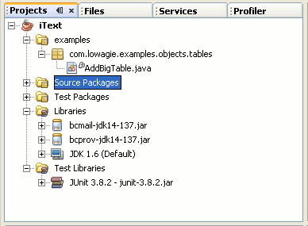
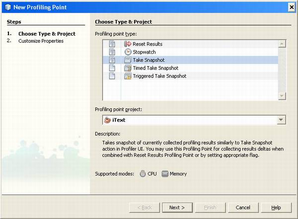
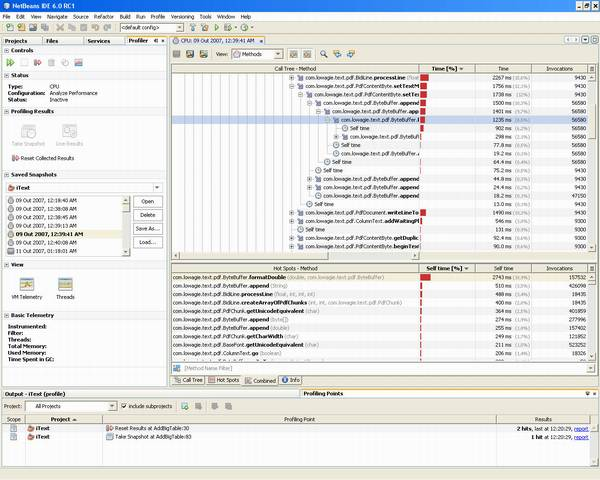
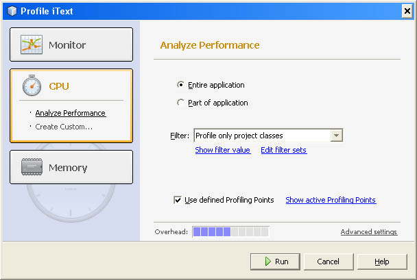
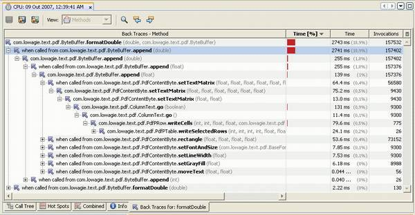
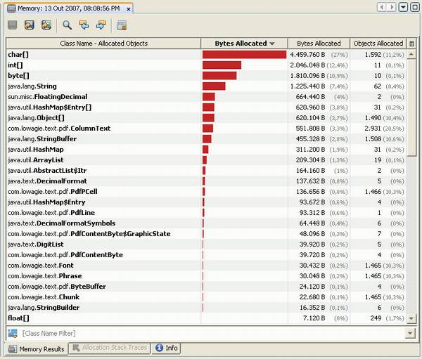
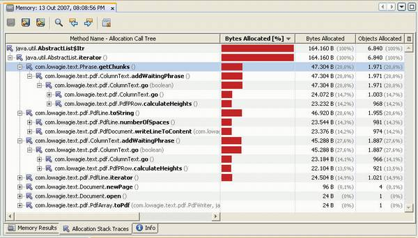
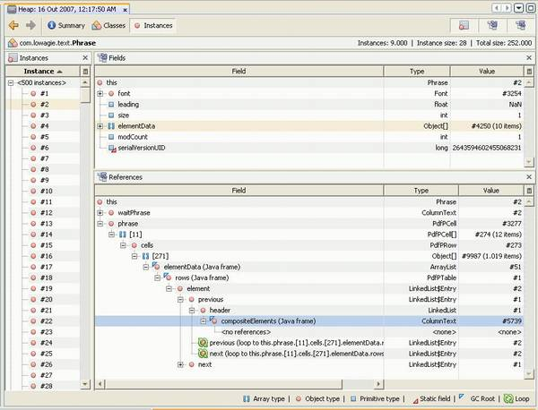

In this article, I will walk you through a series of best practices in Java code profiling, using NetBeans 6.0. The approach is to show a realistic session of profiler-driven code optimization, using the NetBeans Profiler as the core tool.
Hunting for a real-world example
Too many articles, including most of my own production, are limited by sample projects that must “fit”. But using real-world code adds a whole new dimension of meaning – and readers don’t need to trust the author when he concludes that techniques shown through a contrived example will be effective in real applications.
So I picked a real project: iText, a popular open-source Java library for PDF generation and manipulation. Many developers will be familiar with it or use it indirectly (for example, iText is a dependency of many Java report generators and other tools that output PDF). Also, the work performed by iText is both complex and CPU-bound, so it’s a good profiling test bed.
My principle here is to use profiling techniques to learn something interesting about a complex project. And if we’re lucky, find performance problems and investigate their solution, with the help of these techniques and in particular of the NetBeans Profiler. Moreover, I selected a project that I knew only as a user, but whose source code I’ve never read before and an internal architecture I’m not familiar with. Thus I’ll not be in advantage over the reader, and we can learn together.
The right tool for the right job
The NetBeans Profiler is not the ideal tool for every optimization-related task. This is not due to any limitations, but because profilers are best for fine-grained or low-level performance investigation. Imagine a Java EE reporting application that’s not scaling well. The bottleneck could be some inefficient algorithm, but it can also be due to bad application server tuning, inefficient SQL queries, excessive use of remote calls, and many other factors. At this stage of the investigation, you’ll often prefer different tools. For example, GlassFish offers detailed monitoring capabilities, and most database servers provide tools to spot heavy queries. A profiling tool can still help here though; the NetBeans Profiler integrates well with application servers. But in my experience this integration is more suited to profiling sections of Java EE code that are hard to test outside the container.
Once you’ve narrowed the bottleneck to a specific subsystem, at the very least to your own application code or, hopefully, something more specific like “the front-end report generation code”, then it’s the time to start using a code profiler.
Identifying a problem – and benchmarking it
If you plan to follow this article’s step by step, you need to first set up your environment as explained in the box “Installation and setup”. In the project, open the class examples/com.lowagie.examples.objects.tables.AddBigTable. This is one of iText’s standard samples and was selected because it’s complex enough to be interesting for our purposes. Indeed, this sample creates a ~120Kb, 26-page PDF file filled with a very big table. Not your average HelloWorld sample!
Installation and setup |
|
You can follow the steps in this article with any release of NetBeans 6.0 that supports Java development. The Profiler is a built-in feature. Start by creating a project using New Project>Java>Java Class Library. Then visit iText’s download page at SourceForge (sf.net/project/showfiles.php?group_id=15255) and from the iText group get the itext-src-2.0.6.tar.gz file (or the equivalent zip). Unpack it and copy the top-level com directory into your NetBeans project’s src folder. At this point some classes will report compilation errors due to missing dependencies. To solve that, in the same download page go to the extrajars group and download the files bcmail-jdk14-137.jar and bcprov-jdk14-137.jar. Add those to the project’s libraries, and NetBeans should compile the whole project without errors. Now we just need to add the sample code. Again in the download page, go to the tutorial group and get the file tutorial.tar.gz. Unpack it and copy the folder examples to the NetBeans project root. In the project’s Properties (Sources/Source Package Folders), click Add Folder and select the examples folder. After the rebuild, you’ll notice that four packages contain compilation errors; these are examples that use other dependencies, like JFreeChart or the Servlet API. We’re not going to use this part, so you can just delete the four packages, and we’re ready to go. |
A good profiling session should be like any good scientific experiment. You must isolate the code you want to test from other code, and also avoid interference from environment “noise”. This sample is already well isolated. It does nothing beyond creating the PDF file; also there’s no alien code involved: no database access, no middleware. There is a potential source of environment noise, however: file I/O. The sample program writes the document to a PDF file, but this I/O operation is not relevant to what we are measuring. A larger application that uses iText would probably compose the PDF to a memory stream and serve it to some GUI, perhaps store it in a cache; but most likely it wouldn’t write it to a disk file.
The first step towards our profiling goal, then, is to get rid of the file I/O. This is easy to accomplish. I changed the AddBigTable class, replacing “new FileOutputStream(…)” with “new ByteArray OutputStream(…)”. Notice that the memory stream is big enough to hold the entire finished PDF content, so there won’t be reallocations of this buffer to spoil benchmarking precision. Check out the resulting code in Listing 1 (with changed parts in bold); Figure 1 shows the project loaded in NetBeans.
| Listing 1. Initial updates to the AddBigTable class |
|

Figure 1. The iText project in NetBeans
Benchmarking
Profiling and benchmarking are of course related disciplines, so before continuing it’s interesting to go through an exercise in benchmarking*1. The basic requirement is avoiding the “Two Deadly Sins of Java Benchmarking”: dead code and short runs.
Dead code happens when a benchmark is so simple that smart optimizers notice some code is computing data which is never used – so they just eliminate that code and execution times drop to the floor. This is not the case with our current code, however. Even though I don’t use the produced ByteArrayOutputStream for any purpose, I know that the path from iText’s core through multiple layers of I/O objects (like its PdfWriter), and into the byte array stream, is very complex – complex enough that the optimizer in the JVM won’t kill it.
However, the program is still guilty of short run: short programs will run mostly in interpreted mode, so the measured results will be meaningless. From the command line, I measured 1.890 seconds with HotSpot Client 6.0u3 on a Pentium-IV 2,4GHz, which is not too bad. Ideally though, total execution time would be in the range of tens of seconds to a few minutes, to allow for JVM warm-up (initialization, classloading and dynamic optimization).
This is easy to fix: just add a loop that repeats the test several times. I renamed the original main() method to test(), and added a new main() that takes the repeat number from the arguments. See the new method in Listing 2.
| Listing 2. New method main() for AddBigTable |
public static void main (String[] args) {
int times = Integer.parseInt(args[0]);
for (int i = 0; i < times; ++i) {
long t = System.currentTimeMillis();
new AddBigTable().test();
t = System.currentTimeMillis() - t;
System.out.println(t);
}
} |
To set up and run this benchmark, go to the project’s Properties>Run>Main Class, click Browse and select our AddBigTable class. In the same page make Arguments=10. Confirm changes and run the project. I did that for a few recent Java virtual machines; Table 1 shows the results. For CPU-bound work, the increasing sophistication of JVM technology continues to extract more and more from the same hardware. In this particular test, HotSpot Server 6.0*2 saves 20% of your CPU, compared to release 1.4.2 of the same JVM, or 10% when compared to 5.0
Runtime |
Performance |
HotSpot Client 1.4.2u16 |
843ms |
HotSpot Server 1.4.2u16 |
703ms |
HotSpot Client 5.0u13 |
750ms |
HotSpot Server 5.0u13 |
625ms |
HotSpot Client 6.0u3 |
672ms |
HotSpot Server 6.0u3 |
562ms |
Table 1. iText’s benchmark on Sun JVMs from 1.4.2 up to 6.0; results are best of 10 cycles of each test
Profiling CPU usage
We’re a couple pages into the article and yet no use of the NetBeans Profiler. This is an important best practice though: planning before profiling. Now we are at the point where powerful tools should really help (and not just entertain us with beautiful data visualizations).
Booting the Profiler is easy. Just run Profile>Profile Main Project and sit comfortably while watching the results come in… That, however, is not a very productive approach. I’ve spent too much time doing exactly this and waiting for the right moment to click “Reset data”, “Take snapshot” or similar buttons in several profilers. What we really need is data from an “area of interest”, and to have it discretized per iteration of the test, not accumulated for multiple iterations (the first iterations often have meaningless “cold start” performance). That’s why my top new profiling feature in NetBeans 6.0 is Profiling Points.
In AddBigTable.java, go to the test() method’s first line, right click it and choose Profiling>Insert Profiling Point. Select the Reset Results type, accept the defaults for other options and finish the wizard. Then go to the last line of the same method, and create a Take Snapshot profiling point. Figure 2 shows the first page of the Profiling Point creation wizard

Figure 2. Creating a Profiling Point
Having created the two profiling points, we’ll collect a snapshot of each run of the test() method. Since the AddBigTable program loops, invoking this method several times, the Reset Results profiling point is important to avoid accumulation of an execution’s performance data with that for the previous one. There are other very useful types, like Stopwatch (which prints the execution time of a code section) and Timed Take Snapshot (for taking a snapshot at a fixed time after reaching the profiling point).
Now start the profiler with Profile>Profile Main Project. Select CPU and make sure the Entire Application and Use defined Profiling Points options are checked; also set the Filter option to Profile only project classes (see Figure 3).

Figure 3. Starting the profiler
With these settings we instruct the Profiler to observe code execution performance only for classes from our project. As profiling has a significant probe effect (it slows down the observed program), the Profiler allows you to minimize this through several filtering options. The Advanced settings dialog also lets you fine-tune profiling precision. For this experiment, however, the default settings will do, and you can click Run to start the profiling session.
The result of this session should be similar to Figure 4, with ten new snapshots collected. Just look at the last snapshot, which is already “good” (fully optimized execution). You can inspect the results in the Call Tree page (top-down view), in the Hot Spots page (bottom-up view), or in the Combined page, which is split between these two views.

Figure 4. The NetBeans Profiler, focusing on method execution time
The ByteBuffer.formatDouble() method’s “hot spot” can be easily identified. Apparently, this method alone takes ~20% of all the running time of the test, which is surely too long for a single method in a project as complex as iText. So, like vultures over rotting meat, let’s dive into the code, hoping to find something that can be optimized.
Double click the formatDouble() method in the Call Tree page to show its source code (see Listing 3). This method’s purpose is no rocket science: it just formats a double value into a String, with up to six digits of decimal precision. But the code is huge. If a static flag, HIGH_PRECISION, is set to true, the method just relies on Java SE’s DecimalFormat class. But if HIGH_PRECISION==false (the default), there follows a slab of code that’s guaranteed to violate every size and complexity limit enforced by code validation tools.
| Listing 3. The suspected ByteBuffer.formatDouble() (edited for space) |
public static String formatDouble (double d, ByteBuffer buf) {
if (HIGH_PRECISION) {
// “Straight” formatting code
DecimalFormat dn = new DecimalFormat(“0.######”, dfs);
return dn.format(d);
}
// else... 200 lines(!) with custom formatting code.
} |
Now, the obvious – and ironic – fact is that we’ve landed in code that was obviously optimized before. This is after all a mature project. What happens, one may ask, if HIGH_PRECISION is set to true? Not a pretty outcome. With HotSpot Server 6.0u3, the best individual running time goes from 562ms to 1,610ms! As in the original code, formatDouble() takes 20% of the total time, that means 112ms out of the total 562ms. With HIGH_PRECISION==true, as no other code is affected by this flag (I checked this), formatDouble() is consuming 72% of the total time. There’s a 1,030% slowdown for a single method, and a 186% slowdown for the whole test.
The usual suspect
It’s not surprising to find that DecimalFormat is a bottleneck. It’s a well-known fact that java.text’s formatters are broken performance-wise. DecimalFormat objects are very expensive to create since their constructors compile the format strings into an optimized representation that makes each parsing/formatting operation very fast.
This is only good, though, if you can reuse each formatter for a large number of operations; but these objects are not thread-safe, so reuse opportunities are limited. The result is that any multithreaded application – even those with container-managed threads like Java EE apps – are forced to continuously recreate formatters, what can be very expensive.
The best is enemy of the good
Voltaire was hardly thinking about computer programming when he wrote this famous quote, but it serves us well. In the context of code optimization, almost any code can be enhanced a little further – but once any sufficiently complex code is “good enough”, the additional optimization effort increases exponentially as you slowly approach the ideal of perfect, fastest-possible code.
The developer who noticed that SimpleDateFormat was chewing an insane amount of cycles may have jumped too early to the “perfect” solution: an extremely optimized, customized code that performs the required formatting as efficiently as physically possible in Java*3. But is this really necessary? Aren’t there alternative solutions which wouldn’t lead to a method that’s so massive and hard to maintain?
Analyzing iText’s ByteBuffer class*4, you can see that it’s not thread-safe, because of several mutable fields and no synchronization. This is the common design of most buffer-esque objects: they are not often shared, and if they are, they’re better synchronized in upper layers. But this means that the optimization shown in Listing 4 is valid. Here I created a shared DecimalFormat object, limiting the sharing to multiple invocations on the same ByteBuffer instance. As the buffers are never shared, the thread-safety limitation of DecimalFormat is meaningless. I performed the tests again with HIGH_PRECISION==true. The result was 1,047ms; much better than the original result with this option set, but still a significant slowdown (86% worse) over the score for HIGH_PRECISION==false.
| Listing 4. Optimized ByteBuffer.formatDouble() |
public class ByteBuffer extends OutputStream {
...
private static final DecimalFormatSymbols dfs =
new DecimalFormatSymbols(Locale.US);
private DecimalFormat dnCached =
new DecimalFormat(“0.######”, dfs);
...
public static String formatDouble(double d, ByteBuffer buf){
if (HIGH_PRECISION) {
if (buf == null) {
DecimalFormat dn = new DecimalFormat(“0.######”, dfs);
return dn.format(d);
}
else {
buf.append(buf.dnCached.format(d));
return null;
}
}
...
} |
This formatDouble() method is tricky: though static, it can be invoked with a ByteBuffer argument – an “optional this”. If a buffer is received, the formatted value is appended to the buffer; otherwise (i.e. null is passed), the formatted value is returned. So a good hypothesis is that I didn’t obtain all the speedup I wished for, because there are many invocations with buf==null, and I couldn’t optimize this case to reuse the formatter.
Back to the Profiler
Profilers are not only good for finding bottlenecks and performance bugs. They are also great for validating and refining your findings in an iterative and interactive process that should lead to the desired code enhancement.
In the same Call Tree page shown in Figure 4, right click the formatDouble() method and choose Show Back Traces. Now you have a new tab labeled “Back traces for: formatDouble”, showing all code paths that end in that method (see Figure 5). You’ll see two branches. The top one shows traces where the immediate caller of formatDouble() is the append(double) instance method, which passes this to its parameter buf. In the bottom branch, the caller is a static method formatDouble(double), which passes null for this parameter.

Figure 5. The Back Traces tab
We could imagine that the second branch is guilty for the remaining slowness; but a quick look at the numbers proves this not to be true. Even though each invocation in the “slow path” is very expensive, there are very few such invocations – a total of 130, compared to 157,532 invocations in the “fast path”. The “Time [%]” column in the same tab confirms that virtually all execution time goes to the fast-path branch.
This means that the remaining slowness is not caused by an excessive number of DecimalFormat instantiations. It comes from the execution of this object’s format() method, which is still slower than the highly customized code that ByteBuffer.formatDouble() has for the HIGH_PRECISION==false case.
Correct? Perhaps. There is one potential flaw in this conclusion: we don’t know how many ByteBuffer objects are being created. Consequently we don’t know how many times our optimized instance field (DecimalFormat dnCached) is being created. It’s time for a different profiling strategy.
Profiling memory allocation
Start the Profiler again, now with Profile>Profile Main Project, Memory. Accept the defaults for all options and run a new profiling session. Now we have more interesting results: each test iteration allocates 9,440 instances of ByteBuffer and 9,571 instances of DecimalFormat (this is after optimization – remember that the shared formatting object is only used for one of two possible code paths into formatDouble()). The original unoptimized code would allocate 166,973 instances of DecimalFormat per iteration.
I managed to cut 95% of these allocations (as well as the expensive constructions involved), so my instincts say there’s not much to be gained by cutting the remaining 5%. The remaining cost of the simpler formatting code should come from the execution of DecimalFormat.format(), not from the construction of DecimalFormat objects.
That’s game over for our analysis of formatDouble(). The method is already very close to an optimum implementation if DecimalFormat is to be used. See the box “Next step for formatDouble()?” for additional findings that are a final part of the optimization of that method – but follow me here in the investigation of the NetBeans Profiler.
Next step for formatDouble()? |
|
In the investigation of iText summed up in the body of the article, I was able to optimize ByteBuffer.formatDouble()’s “straight” formatting code significantly (using SimpleDateFormat). But not enough to compete with the performance of the existing optimized formatter. Profiling and optimization are hard, but even more difficult is making tradeoffs. Specifically, is the optimized code good enough to be preferable – if not by default, then at least in some circumstances – over the existing custom formatter? There’s no easy answer. The original straight code was clearly unacceptable. You’ll notice, if you read iText’s full ByteBuffer.java, that the HIGH_PRECISION flag has its value hardwired. The shipping iText binary is compiled with HIGH_PRECISION==false, and this option can only be changed by editing the source code and recompiling the library. Now, the optimized straight code makes my benchmark only 86% slower (instead of 186%) than the custom format code. This is still significantly slower, so certainly iText users would prefer to keep using the existing optimized formatter. Or not? Speed is not everything, and the name of the HIGH_PRECISION flag implies of course that when it’s set to false some loss of precision is expected. Indeed, the optimized formatter performs some approximations like this one (edited):
This truncates many close-to-zero numbers, killing their sixth decimal position (plus roughly one bit of the fifth). There are additional approximations in the code. An experiment talks louder than any hypothesis, so I executed the program twice, first with HIGH_PRECISION set to false and then setting the flag to true – with both runs writing the PDF content to a file as the original code did. The default low-precision setting produced a document with 119,262 bytes, but the high-precision document was significantly bigger: 135,007 bytes. Then I instrumented the program to format each value with both algorithms and dump the results. To my surprise, I saw that the optimized algorithm used only two decimal digits of precision for all numbers! Here’s a typical output for this instrumented run:
I discovered that my comparison is not fair. I’m comparing an algorithm that formats with six decimal digits of precision against one that goes only to two decimal places. I fixed this by simply changing the format string to “0.##”. Touché: the PDF was created with 119,262 bytes, identical to the optimized formatter (which is also a good validation of our new code if we consider DecimalFormat as the “canonical” formatter). As a result, the execution time went down to 984ms. This is still 75% worse than the optimized formatter, so it doesn’t change matters a lot… Unless the full precision is useful. If PDF files contain a large number of floating-point numbers, I’d expect additional precision to have an impact on the quality of the documents. I tried to measure this, but without success; the “high-precision” PDF looked identical to the “low-precision” one to my bare eyes (on 1280x1024 resolution and using Adobe Reader 8.1). Perhaps the problem is that the test document is too simple for us to detect the difference – it’s just a huge table with heading and borders, and loads of dummy alphanumerical data filling the cells. But a program that produces PDFs with complex, high-precision graphics – say, a CAD tool – may result in a perceivable advantage for the high-precision flag, especially when printing the PDF on a high-DPI printer or plotter. I will have to leave this conclusion to iText’s developers and advanced users. If we consider that the high-precision output could be useful in some scenarios, the enhanced formatter might be a good option even with a significant speed hit. In this case I’d leave HIGH_PRECISON==false as default, but provide some means of changing it. (It’s also possible that I picked a sample that depends on formatDouble()’s performance much more than usual.) |
The Memory Results view in Figure 6 shows the top allocations, which may be good enough for solving some performance diagnostics. Sometimes you’ll also need to consider the containment relationships between several classes: for example, most char[] objects are private fields of String or StringBuffer/StringBuilder objects, and all HashMap$Entry objects are used inside HashMap instances. So you can easily spot some common behaviors of iText; for example it creates a large number of Strings – which is not surprising since it’s a document-processing library. What seems less natural is that iText also allocates a good number of AbstractList$Itr objects. This doesn’t look like an unavoidable cost of the task being performed.

Figure 6. Top allocated objects by heap usage
We’ve found a place that deserves further inspection. We’ll need require additional profiling data: run a new memory profiling session, this time activating the option Record stack trace for allocation. Now, for each class listed in the Memory Results tab, the NetBeans Profiler enables a context menu item: Show Allocation Stack Traces.
In Figure 7 you can see all code locations where iterators are allocated. Java’s iterators often cause performance problems, because they are heap-allocated objects. They create additional costs as well: their “fail-fast” behavior makes their implementation more complex, requiring additional indirections and polymorphic calls inside loops. That’s why, in performance critical code, I avoid iterators like the plague*5.

Figure 7. Allocation stack traces for list iterators
Most iterators identified in Figure 7 are being created gratuitously, in methods like Phrase.getChunks() and PdfLine.toString(). The static type of iterated collections is always ArrayList, and iterators are used just for walking the collections (there are no other operations, like remove()). This shows that iText is optimized to avoid using collection interfaces (like List), when such flexibility is not necessary. In this case, why use iterators? Using loops with get() and size() would be faster.
A good excuse for iterators is dealing with collections whose static type is an interface, because you either don’t have access to more specialized access methods, or aren’t sure of their performance traits. In particular, iterating an arbitrary List with indexing is a potential disaster, because if the list happens to be a LinkedList, the random access methods are available but they’ll crawl, of course.
Both of these top iterator-allocating methods could benefit from indexed access and other optimizations. See Listing 5. The toString() method has two small problems. First, it uses StringBuffer (instead of the much better StringBuilder API of Java SE 5.0+); this is probably a concession to compatibility with older runtimes. Second, toString() does not preallocate the size of the buffer, which is difficult to estimate, because each PdfChunk.toString() may return a string with a different size. But in my experience, even a very raw and conservative estimation – say line.size()*16, where 16 is a (somewhat arbitrary) small size per chunk – is much better than no estimation at all (which often causes excessive reallocation).
| Listing 5. Methods deserving small optimizations |
// class PdfLine:
public String toString() {
StringBuffer tmp = new StringBuffer();
for (Iterator i = line.iterator(); i.hasNext(); ) {
tmp.append(((PdfChunk) i.next()).toString());
}
return tmp.toString();
}
// class Phrase:
public ArrayList getChunks() {
ArrayList tmp = new ArrayList();
for (Iterator i = iterator(); i.hasNext(); ){
tmp.addAll(((Element) i.next()).getChunks());
}
return tmp;
} |
There’s a similar problem in the getChunks() method: the new ArrayList that accumulates elements taken from the current object (Phrase itself is a list) lacks preallocation. This case could also benefit from a conservative estimation, e.g. new ArrayList(size()).
So there you go – no less than five optimization opportunities in just two methods totalling 14 lines of code. Should we go ahead and execute all five? This requires, as usual, some additional thought. Of course I’d need to have more experience with the iText codebase to determine if each of these optimizations is worth its cost (e.g., the cost of having less maintainable/readable code, if you think that iterators are better than explicit indexed access).
In any case, this is a good opportunity to remember that efficient programs are not created only with a handful of super optimizations with order-of-magnitude gains (also known as “having fun”). They are also created with hundreds of tiny optimizations which in aggregate can make a very significant difference.
Walking the heap
The Heap Walker is another major new feature of the Profiler in NetBeans 6.0. Performance problems can often be diagnosed on a relatively high-level, with coarse summary information like “too many instances of X are being allocated”. But sometimes this isn’t enough; you need finer-grained data like “too many instances of X are allocated as fields of Y”. This leads to diagnostics like “perhaps I should lazy-initialize these fields since they’re
rarely used”.
To help handling these situations is the role of the Heap Walker. In order to test this feature, run a new profiling session (any profiling mode will do) and in the middle of the program’s execution run Profile>Take Heap Dump. Pick Profiled project as the destination, stop the profiling session and open the heap dump (it’s available in the Saved snapshots window). Heap dumps will be opened by the Heap Walker, as in Figure 8.

Figure 8. The Heap Walker
The Heap Walker’s default Summary view shows some basic statistics, like the total number of bytes in the whole heap. But this tool is more valuable for collecting very fine-grained data. Start selecting the Classes view. This shows a tabulation of instance counts and heap sizes per class, similar to the Memory Results tab of the memory profiling snapshots. The difference is that now you can select a class and right click Show in Instances view.
This brings a three-pane view. The Instance pane lists every single instance of the class (instances may be grouped in blocks of 500). Select any individual instance, and you see its fields in the Fields pane and the objects that point to it in the References pane. This information about references is usually the most interesting.
For example, when inspecting a random Phrase object from iText, you’ll be able to see the whole tree of objects forming the PDF document’s object model. You can verify that a certain Phrase object is contained by a PdfPCell[] array, which is in a PdfPRow object, and so forth. The structure below the PdfPCell[] array seems to be a simple tree (each object having a single parent). Were I an iText developer, I would of course know this tree structure beforehand and wouldn’t be surprised with this piece of the heap dump. On the other hand, if I got a different dump than expected, e.g, with several live references to the same PdfPRow object, this could be evidence of some problem, such as a memory leak or bugs in the document construction algorithms.
Indeed, heap walking tools are often as useful for debugging as they are for profiling, if not even more handy.
Conclusions
The focus of this article was to illustrate profiling techniques on a real-world example and concentrate on the major new features in the NetBeans 6.0 Profiler: Profiling Points and the Heap Walker. (Incidentally, there are many other improvements we didn’t cover, such as comparison of memory snapshots, drill-down graphs, integration with JMeter, and support for JDK 6’s dynamic attachment facility.)
As you could see from our sample profiling sessions, code profiling and optimization can be a laborious, trial-and-error process. You may need to write new code just to support this work, even if you have access to the best tools; then you’ll spend most of your time thinking about the consequences of each code tweak. In my experience, the actual code optimization is often the easiest part. It’s often obvious, once you fully understand the problem.
Writing high performance code is difficult, but it is much
easier with good tools. And the NetBeans Profiler is one of the best tools anywhere for that job: it automates repetitive tasks like taking snapshots at the right moment, runs efficiently so as to not break your creative mood with long pauses, and makes a lot of data easily accessible through clear visualizations.
If you go through the steps in this article following it as a tutorial, you’ll notice that the time spent in the Profiler (e.g., running a particular command) is minimal. That’s the mark of a great tool: not getting in your way – because you’re paid to build engines, not to use screwdrivers.

{kind=link}
{kind=link}
{kind=link}
{kind=link}
{kind=link}
{kind=link}